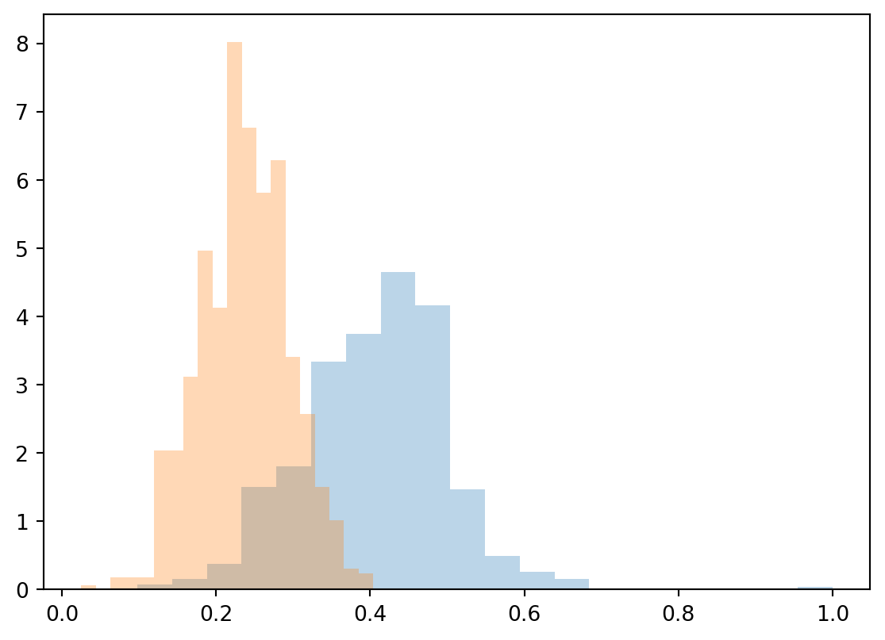

Code
import matplotlib.pyplot as plt
ic_neighbor_result = collect_neighbor_data(ic_result, params)
ic_neighbor_result = list(numpy.mean(lst) for lst in ic_neighbor_result)
plt.figure()
plot_community_dists(ic_neighbor_result, params)
plt.show()
Same graph as experiment 1, but we now measure the “collateral” consequences in a few different ways.
from exps import *
import numpy
overseeding_factor = 4
params = dict(
# graph params
n = 1000,
p1 = 0.01 / 2,
p2 = 0.01 / 2,
p_inter = 0.0001 / 2,
# seeding params
seed1 = overseeding_factor * 0.1,
seed2 = 0.1,
# IC params
alpha = 0.1,
reprs = 10000,
communities = [list(range(0, 1000)), list(range(1000, 2000))])
params["graph"] = two_communities(params)
params["seeds"] = set_seeds(params)We generate a community graph, seeds, run the IC computation as before.
ic_result = run_experiment(params)But now we collect our neighbor’s information first, and then compute the mean over that:
import matplotlib.pyplot as plt
ic_neighbor_result = collect_neighbor_data(ic_result, params)
ic_neighbor_result = list(numpy.mean(lst) for lst in ic_neighbor_result)
plt.figure()
plot_community_dists(ic_neighbor_result, params)
plt.show()
Or the min:
ic_neighbor_result = collect_neighbor_data(ic_result, params)
ic_neighbor_result = list(-1 if len(lst) == 0 else numpy.min(lst) for lst in ic_neighbor_result)
plt.figure()
plot_community_dists(ic_neighbor_result, params)
plt.show()